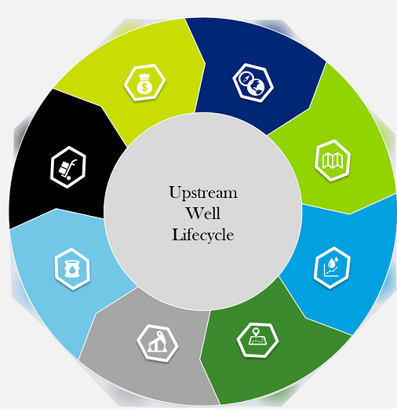

The Well Lifecycle Analytics Portal is an interactive site to find timely and relevant artifacts – Accelerators, Use Cases, Demos – to show to internal and external sources
- Click on one of the sections around the Well Lifecycle to access artifacts
- You can also search using the search bar at the top of the page to search for specific artifacts based on key word tags
- Finally, you can also click on one of the tiles below to pull up artifacts associated that foundational area
Foundational
Data Management
Advanced Analytics
Digital Transformation